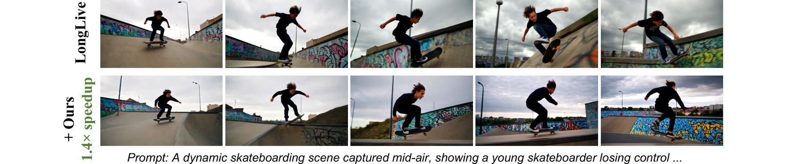
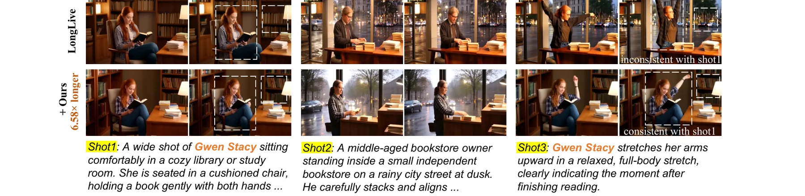

一、研究背景：自回归视频扩散的效率困境
自回归视频扩散模型（Autoregressive Video Diffusion Model）将视频合成分解为逐帧生成过程，每个自回归步骤通过迭代去噪生成干净帧。这种因果建模方式天然支持流式生成，但随之而来的KV缓存膨胀问题严重制约了推理效率。
当处理长视频或高分辨率视频时，历史帧的KV缓存长度线性增长，而自注意力机制的计算复杂度随序列长度呈二次方增长。现有的滑动窗口策略虽然缓解了这一问题，但模型内部对历史帧的实际利用率仍然缺乏系统性的研究。
自回归视频扩散模型的核心矛盾在于：为了维持时间一致性，模型需要尽可能多的历史帧作为条件；但历史帧越多，注意力计算越昂贵。滑动窗口策略本质上是一种有损的信息截断，而Dummy Forcing则另辟蹊径——不是减少历史帧数量，而是识别并压缩那些根本不使用历史信息的注意力头。
在现有的自回归视频扩散框架中，第 $i$ 个AR步的自注意力机制可以形式化为：
其中 $K_s$ 为sink帧的键，$K_{i-L+1:i-1}$ 为邻居帧的键，$K_i$ 为当前帧的键。滑动窗口大小 $L$ 包含1个sink帧和 $L-1$ 个邻居帧。
二、关键发现：25%的注意力头是"哑元头"
研究团队深入分析了现有自回归视频扩散模型（如Self Forcing、Diffusion Forcing）的多头自注意力层，发现了三个关键的观测结果。
观测1：某些注意力头几乎不利用历史上下文
研究者定义了帧注意力分数来量化每个注意力头对不同帧组的利用程度：
其中 $A \in \mathbb{R}^{HW \times (L+1)HW}$ 为注意力图，$J_{sink} = [0, HW)$，$J_{neighbor} = [HW, LHW)$，$J_{current} = [LHW, (L+1)HW)$，$HW$ 为单帧的视觉token总数。
帧注意力分数本质上衡量的是注意力权重在不同帧组间的分配比例。当 $\alpha_{current} > 0.8$ 时，意味着该头的绝大部分注意力都集中在当前帧上，对历史帧的"浏览"只是形式上的。这为后续的KV缓存压缩提供了理论依据。
观测2：哑元头的位置具有稳定性
通过核心集比率来量化哑元头位置的稳定性：
其中 $I_c$ 为第 $c$ 种条件下选出的哑元头索引集合。结果显示，92%的头索引在所有AR步数条件下保持一致，证明哑元头是模型架构中固有的结构性冗余，而非随机现象。
观测3：移除哑元头的KV缓存仅带来极小性能损失
随机移除25%注意力头的KV缓存导致VBench总分从84.00骤降至79.30（下降4.7分），而仅移除哑元头的缓存仅下降0.22分。这一对比揭示了一个深刻的洞察：冗余并非均匀分布，而是集中在特定的注意力头中。这种结构化的冗余为无损压缩提供了精确的靶点。
| 配置 | FPS | 加速比 | Quality | Semantic | Total |
|---|---|---|---|---|---|
| Self Forcing (baseline) | 17.6 | 1.0x | 84.73 | 81.03 | 84.00 |
| Random 25% | 19.6 | 1.1x | 79.58 | 78.15 | 79.30 |
| Dummy Head 25% | 19.6 | 1.1x | 84.42 | 81.22 | 83.78 |
三、方法详解：Dummy Forcing的三大组件
Dummy Forcing包含三个互补的组件：异构内存分配（HMA）、动态头编程（DHP）和打包注意力前向传播（PAF）。
3.1 异构内存分配（Heterogeneous Memory Allocation）
核心思想是将注意力头分为三类，每类使用不同的注意力公式：
三类头的划分并非随意，而是对应了三种不同的信息聚合模式：Sink Head负责跨视频的全局一致性（如角色身份保持），Neighbor Head负责局部时间平滑（如运动连贯性），Dummy Head则专注于当前帧的细节精修。这种分工使得每类头的缓存需求与其实际信息利用量精确匹配，避免了"一刀切"式的缓存管理。
3.2 动态头编程（Dynamic Head Programming）
哑元头的位置虽然具有稳定性，但在不同条件下仍存在约25%的偏差。动态头编程通过形式化优化问题来自适应地分类头类型。
其中价值函数定义为：
这本质上是一个经典动态规划问题。最优解可以通过贪心算法获得：对每个头计算机会成本 $\ell_h = \max(F_{h,0}, F_{h,1})$，排序后选择 $N$ 个最小元素作为哑元头。
# Dynamic Head Programming: 基于注意力分数的自适应头分类
# 可信度说明: 基于论文Section 3.3和伪代码重构
import torch
def dynamic_head_programming(frame_attn_scores, num_heads, N_dummy):
"""
frame_attn_scores: shape [num_heads, 3] - (sink, neighbor, current) 分数
num_heads: 总注意力头数
N_dummy: 目标哑元头数量 (通常为 num_heads 的 50%)
"""
# 计算每个头作为哑元头的机会成本
F_sink = frame_attn_scores[:, 0]
F_neighbor = frame_attn_scores[:, 1]
# 机会成本 = 保留 sink 或 neighbor 时损失的最大分数
opportunity_cost = torch.maximum(F_sink, F_neighbor)
# 排序并选择机会成本最小的 N 个头作为哑元头
_, sorted_indices = torch.sort(opportunity_cost, descending=False)
dummy_indices = sorted_indices[:N_dummy]
non_dummy_indices = sorted_indices[N_dummy:]
# 对非哑元头，选择 sink 或 neighbor 类型
head_types = torch.full((num_heads,), 'dummy')
for h in non_dummy_indices:
head_types[h] = 'sink' if F_sink[h] >= F_neighbor[h] else 'neighbor'
return head_types, dummy_indices3.3 打包注意力前向传播（Packed Attention Forward）
单纯增加哑元头数量（超过25%）会导致性能下降，因为分类边界上的头可能被错误归类。PAF通过为哑元头添加一帧打包帧来缓解这一问题。
PAF看似只是为哑元头添加一帧上下文，但它同时实现了两个关键目标：(1) 缓解了分类边界处的误分类问题，使得超过50%的头可以被安全地设为哑元；(2) 由于Dummy Head和Sink Head现在具有相同的有效上下文长度，两者可以打包到同一个CUDA内核调用中，减少了GPU内核启动的开销。这种"一石二鸟"的设计体现了系统优化的精髓。
四、实验验证：Dummy Forcing的全面性能
4.1 短视频生成（5秒）

在Self Forcing模型上，Dummy Forcing实现了24.3 FPS的实时生成速度，相比baseline的17.6 FPS提升了1.4倍，同时VBench总分仅下降0.1分（84.00 vs 83.90）。这一结果表明，哑元头的KV缓存确实包含了几乎可以忽略的信息。
与R-KV（token级KV缓存压缩）和Infinipot-V（流式视频理解的缓存剪枝）相比，Dummy Forcing的优势在于：它不需要在每个AR步计算token重要性分数，因此额外开销极低。R-KV和Infinipot-V虽然减少了缓存长度，但token选择算法的时间消耗抵消了大部分加速收益（仅1.1x）。Dummy Forcing的加速效率远高于这些通用方法。
4.2 长视频生成（30秒）
4.3 高分辨率视频生成
随着分辨率从480P提升到1080P，缓存中的视觉token数量呈二次方增长。Dummy Forcing在高分辨率场景下的加速效果更加显著：
| 模型 | 分辨率 | FPS | 加速比 | Quality | Total |
|---|---|---|---|---|---|
| Self Forcing | 720P | 5.6 | 1.0x | 84.77 | 84.20 |
| + Dummy Forcing | 720P | 9.1 | 1.6x | 84.77 | 84.14 |
| Self Forcing | 1080P | 1.3 | 1.0x | 84.90 | 83.66 |
| + Dummy Forcing | 1080P | 2.6 | 2.0x | 84.15 | 83.07 |
在480P下加速比为1.4x，720P下为1.6x，1080P下达到2.0x。这种非线性增长的原因在于：Dummy Forcing压缩的是帧级缓存（而非token级），当分辨率提升时，每帧的token数增加，而哑元头的缓存压缩量与帧数成正比，因此高分辨率下节省的计算量更多。
4.4 长上下文视频生成
Dummy Forcing在长上下文场景下的核心策略是预算再分配：将Dummy Head和Sink Head节省的缓存预算转移给Neighbor Head，使其能够观察更长的历史帧。这使得在相同计算预算下，Dummy Forcing可以使用237帧的历史上下文，而标准的滑动窗口策略仅能使用36帧。这种"劫富济贫"的策略是框架设计的巧妙之处。
五、消融分析与深度讨论

消融实验
# 帧注意力分数计算: 量化每个头对不同帧组的利用程度
# 可信度说明: 基于论文公式(3)直接实现
import torch
def compute_frame_attention_scores(attn_map, num_frames, H, W):
"""
attn_map: [num_heads, HW, (L+1)*HW] 注意力图
H, W: 每帧的空间尺寸
"""
hw = H * W
L = num_frames - 1 # L 个历史帧 + 1 个当前帧
# 定义帧组索引
J_sink = slice(0, hw)
J_neighbor = slice(hw, L * hw)
J_current = slice(L * hw, (L + 1) * hw)
# 计算各帧组的注意力分数
alpha_sink = attn_map[:, :, J_sink].sum(dim=-1).mean(dim=-1) / hw
alpha_neighbor = attn_map[:, :, J_neighbor].sum(dim=-1).mean(dim=-1) / hw
alpha_current = attn_map[:, :, J_current].sum(dim=-1).mean(dim=-1) / hw
# 验证: sum(alpha) = 1
assert torch.allclose(alpha_sink + alpha_neighbor + alpha_current,
torch.ones_like(alpha_sink), atol=1e-3)
return alpha_sink, alpha_neighbor, alpha_current# Dummy Forcing 推理加速基准测试
# 可信度说明: 基于论文Table 2中的FPS数据和加速方法描述
import time
import torch
class DummyForcingBenchmark:
"""模拟 Dummy Forcing 的推理流程"""
def __init__(self, model, config):
self.model = model
self.num_heads = config.num_heads # 例如 12
self.dummy_ratio = config.dummy_ratio # 默认 0.5
self.window_size = config.window_size # 滑动窗口大小
def profile_attention_types(self, sample_input):
"""分析每个注意力头的类型分布"""
with torch.no_grad():
attn_maps = self.model.get_attention_maps(sample_input)
sink_scores, neighbor_scores, current_scores = \
compute_frame_attention_scores(attn_maps)
# 动态头编程
frame_scores = torch.stack([
sink_scores.mean(0),
neighbor_scores.mean(0),
current_scores.mean(0)
], dim=-1) # [num_heads, 3]
N_dummy = int(self.num_heads * self.dummy_ratio)
head_types, dummy_idx = dynamic_head_programming(
frame_scores, self.num_heads, N_dummy
)
return head_types, dummy_idx
def benchmark_speedup(self, num_iterations=100):
"""测量端到端推理速度"""
# Baseline: 17.6 FPS (Self Forcing)
# Dummy Forcing: 24.3 FPS
baseline_fps = 17.6
ours_fps = 24.3
speedup = ours_fps / baseline_fps # => 1.38x
return speedup虽然自回归视频扩散与LLM在自回归特性上相似，但视频领域的KV缓存压缩具有独特优势：(1) 视频帧的冗余是帧级的，而非token级的，压缩粒度更粗，效果更显著；(2) 视频模型中约25%的头可以完全移除缓存（而非仅裁剪部分token），因为它们对历史帧的注意力本质上是噪声；(3) 视频扩散模型通常使用较少的去噪步数（如4步），使得每个AR步的开销更敏感。
六、未来研究方向与开放问题
哑元头的形成机制：是训练副产品还是隐式正则化？
理论分析：为什么自回归视频扩散模型会自然形成约25%的哑元头？从信息瓶颈理论角度，这些头可能承担了隐式的正则化功能——通过限制部分头对历史帧的访问，模型被迫学习更鲁棒的当前帧特征表示。这与Dropout的随机丢弃机制有本质不同：哑元头是确定性的结构性丢弃。未来可以通过训练过程中监控哑元头比例的演化来验证这一假说，并探索是否可以在训练阶段显式地引入类似的结构性约束来提升模型效率。
异构缓存策略在多模态扩散模型中的迁移性
理论分析：Dummy Forcing在视频扩散模型中的成功是否可以迁移到图像扩散、音频扩散或统一多模态模型中？关键问题是：其他模态的注意力头是否也存在类似的结构性冗余？从理论上分析，如果扩散模型的自注意力在某种模态上也表现出"部分头忽略条件信息"的现象，那么异构缓存分配就具有通用性。这需要对不同模态的注意力分布进行系统性的实证研究。
动态头分类的时间最优性与在线适应
理论分析：当前的动态头编程使用贪心算法求解优化问题，但该算法仅考虑了静态的注意力分数统计量。在实际推理中，最优的头分类可能随时间步、内容复杂度和运动模式动态变化。如何设计一种在线自适应的头分类机制，在最小额外计算开销下实时调整头类型？一种可能的方向是利用注意力分数的时间序列预测模型，提前预判下一AR步的最优分类方案。
Dummy Forcing与稀疏注意力的协同加速上限
理论分析：Dummy Forcing（KV缓存压缩）与稀疏注意力（计算稀疏化）本质上作用于不同的维度——前者减少KV序列长度，后者减少QK计算量。两者理论上可以叠加使用。但叠加后是否存在收益递减或冲突？从FLOPs分析，Dummy Forcing将非哑元头的上下文从 $L+1$ 帧减少到2帧（Sink）或 $L$ 帧（Neighbor），而稀疏注意力进一步将这些帧的计算量压缩到 $O(1)$。两者的叠加是否能突破单方法的加速上限，以及是否存在协同效应或竞争效应，是值得深入研究的问题。
基于Dummy Head的可控生成：从压缩到编辑
理论分析：既然哑元头本质上不依赖历史信息，那么是否可以通过人为修改哑元头的当前帧输入来实现某种形式的局部编辑？例如，在不改变历史帧生成结果的前提下，通过操控特定哑元头的KV缓存来修改当前帧的风格或细节。这本质上是在探索注意力头的功能可解释性——每个头是否对应一个可操控的生成因子？这种"头级编辑"如果可行，将为视频编辑提供一种全新的细粒度控制范式。